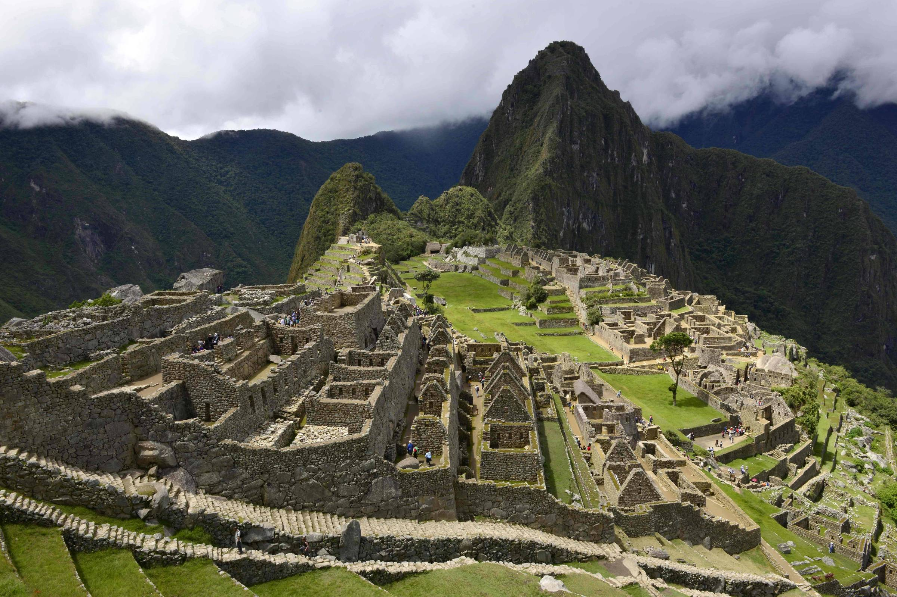
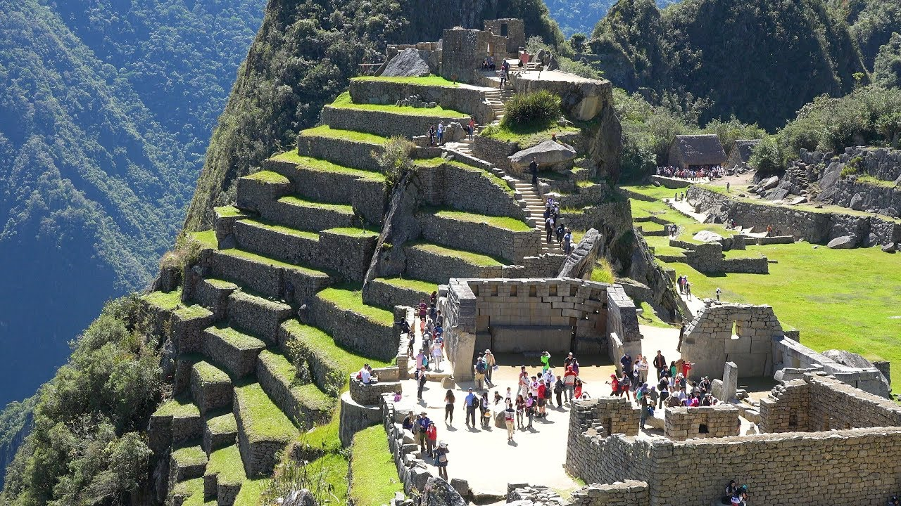

Machu Picchu (em quíchua Machu Pikchu, "velha montanha"), também chamada "cidade perdida dos Incas", é uma cidade pré-colombiana bem conservada, localizada no topo de uma montanha, a 2400 metros de altitude, no vale do rio Urubamba, atual Peru.
Foi construída no século XV, sob as ordens de Pachacuti. O local é, provavelmente, o símbolo mais típico do Império Inca, quer devido à sua original localização e características geológicas, quer devido à sua descoberta tardia em 1911. Apenas cerca de 30% da cidade é de construção original, o restante foi reconstruído. As áreas reconstruídas são facilmente reconhecidas, pelo encaixe entre as pedras. A construção original é formada por pedras maiores, e com encaixes com pouco espaço entre as rochas.
Fonte: